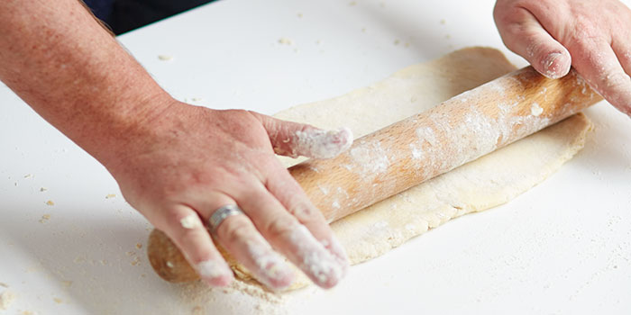

|  | A good rolling pin is a fundamental item to hold in your kitchen arsenal. This simple apparatus is absolutely essential for pastry and biscuit making, but also for making pizza,pasta, dumplings or flatbreads.It is not as simple as picking up a traditional wooden pin though they are now available in lots of different materials like marble,stainless steel,glass and ceramic, all of which are beneficial in different ways and should be used for specific kitchen tasks. |